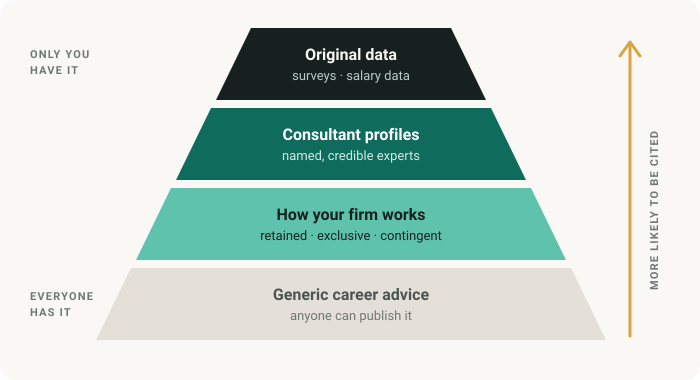

SEO for recruitment firms: stop publishing generic content
Most recruitment websites publish the same content as everyone else, so Google and AI tools have no reason to pick theirs. What's worked for us is content nobody else could write: our own survey data, plain explanations of how we work, and proper pages for our consultants. None of it helps much if the technical SEO underneath is broken.
Why does most recruitment content fail?
I look at a lot of recruitment websites, partly for work and partly out of habit. After a while, they start to blur together. Two things cause most of it.
It doesn't sound like the firm
Here's one I see all the time. A firm that places CEOs and CFOs has a blog full of posts like "How to write a better CV" and "5 interview mistakes to avoid".
Who is that for? Not the CFO they want to place, and definitely not the board that's hiring one. It's fresh-grad content. It also makes a specialist firm look like a generalist, which is the opposite of what they're paying their marketing team for.
Before publishing anything, I ask one question: would the person we most want to work with read this and think, "these people get it"?
Everything reads the same
This one is harder to fix. So much content is now drafted by AI and lightly edited, and you can tell. Pick a topic, open five articles from five different sites (recruitment or otherwise), and you'll find the same structure, the same points and sometimes the same sentences.
If your article could be swapped for four others, Google and ChatGPT have no reason to choose yours. I use AI tools too. But the part that makes a page worth reading, like your numbers, your process and what your consultants are seeing in the market, has to come from you.

What's actually worked for us?
At the firm I work for, three kinds of content have done most of the heavy lifting.
Our own data and case studies
Recruiters sit on information nobody else has. You know which skills are hard to find, what people are being paid and why they move. Most firms never publish any of it.
I led a talent survey for our sector, taking it from a spreadsheet of responses to a finished report. Google started quoting it in AI Overviews. It also helped our website reach the top of Google for searches like "best executive search firm Singapore" and "top executive search firm", and our site now gets cited in AI Overviews and ChatGPT for those same questions.
Case studies worked the same way. One of ours was picked up in Google's AI Overviews and started coming up in ChatGPT's answers too. That led to quite a number of clients reaching out to us. A CV-tips article was never going to do that.
Explaining how we work
Plenty of clients don't really know the difference between retained, exclusive and contingent search, or which one they need. So we wrote it down, in plain language. Those articles answer the questions people ask just before they choose a recruiter, and they've been some of our most useful pages.
They also do some of the selling for us, without reading like a sales page.
Consultant profiles
When clients and candidates contact a recruiter, they want to know who they'll actually be talking to. So every consultant should have a proper page: the sector they cover, the roles they fill, their background and a link to their LinkedIn.
It builds trust before the first call. It also helps with search, because it gives Google and AI tools real, named experts to connect to your firm.
Is your technical SEO actually working?
This is my advice for any website, not just recruiters. A site can look great and still be broken underneath. You won't notice by clicking around, but Google will.
Here's what I check first:
- Pages that should be in Google aren't set to
noindexor blocked inrobots.txt. - Canonical tags point to the right page, not a staging site or an old domain.
- Expired job ads aren't piling up as hundreds of thin, near-identical pages. If you use JobPosting schema, keep the closing dates accurate.
- Your schema (Organization, Person, Article) passes Google's Rich Results Test.
- Your sitemap is current and submitted to Google Search Console and Bing Webmaster Tools.
- Pages load quickly on a phone, even with the job-board widget and five tracking scripts.
You can write the best salary guide in your sector, but if Google can't index it properly, nobody will find it.
What do I do first when I join a new firm?
When I join a company as its marketer, I spend the first few weeks looking around and listening before I write anything. Roughly, this is the order I work in:
- Read everything that's already published. For every post, I ask whether our ideal client would expect it from us. Some get rewritten, and some get retired.
- Check the technical side. Before I add anything new, I make sure Google can crawl and index the site properly. Otherwise new content goes nowhere.
- Talk to the consultants. They know the market better than anyone, and most of my best content ideas come out of those conversations.
- Explain how the firm works. Plain-language pages on the search models and the process, written for a client who's about to choose a recruiter.
- Build out the consultant profiles. One proper page per consultant, kept up to date.
- Plan one piece of original research a year. A survey or salary guide is enough to start with.
- Track it every month. No single tool shows the whole picture, so I use a few together:
- Google Search Console shows which searches we appear for, how often people click, and any pages that have dropped out of Google's index.
- Google Analytics shows what happens after the click: whether visitors read on, enquire or apply. It also shows how many people arrive from AI tools like ChatGPT and Perplexity, which appear as referral traffic.
- Screaming Frog crawls the whole site the way a search engine would. A monthly crawl catches broken links, redirect chains, missing titles and pages accidentally set to
noindexbefore they cost us rankings. - Manual AI checks. I ask Google, ChatGPT and Perplexity the questions our clients ask, and note whether we're mentioned and whether what they say about us is accurate.
FAQ
Should recruitment firms stop writing career advice?
Not entirely. It just has to fit. If you place senior finance leaders, write about what boards actually look for in a CFO, based on searches you've run. Skip the generic CV tips.
Is AI-written content bad for SEO?
In my experience, the problem is sameness. Google cares less about how a page was written than about whether it adds anything. A page that repeats what's already out there will struggle either way.
Does this apply outside recruitment?
Yes. Whatever your industry, publish things that are genuinely useful and can't be found everywhere else, and make sure the technical SEO behind them is right. That covers most of it.

Johnny Lim is a Singapore-based digital marketing manager specialising in SEO and GEO. Johnny currently leads marketing, SEO and AI search visibility for a specialist executive search firm. More about Johnny · LinkedIn